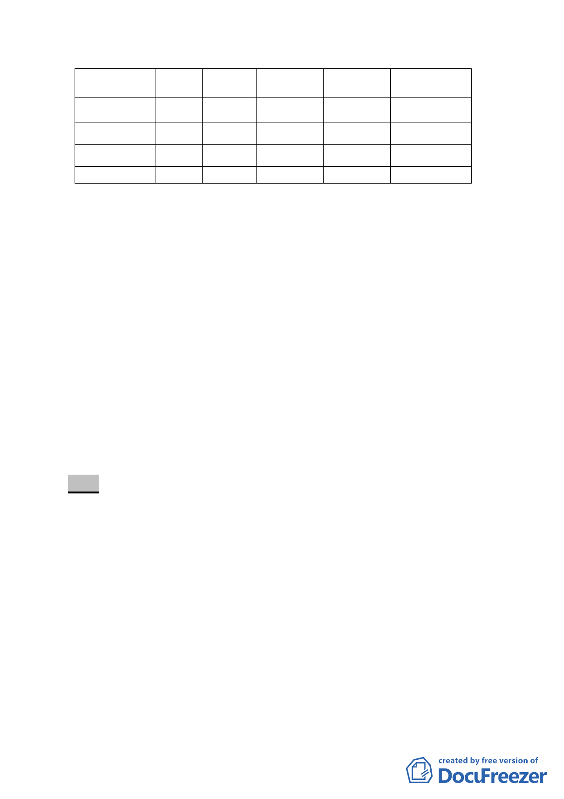

公共設施種類
公園用地
面積
(公頃)
0.4
開闢經
費(千元)
12000
預定完成期
限
民國 104 年
土地取得方
式
市地重劃
道路用地
2.37 94800 民國 104 年 市地重劃
護坡用地
道路用地
0.015
0.11
612
8376
民國 104 年 市地重劃
民國 104 年 徵收取得
主辦單位
臺北市政府
臺北市政府
臺北市政府
臺北市政府
叁、法令依據：
一、 主要計畫：都市計畫法第27條第1項第3款。
二、 細部計畫：都市計畫法第22條、都市計畫法第27條第1項第
3款。
三、 辦理單位：臺北市政府。
四、 公民或團體所提意見：主要計畫共13件；細部計畫共13件。
(詳後附)
肆、本次提會會議資料係市府發展局依據本會第622次大會審議決
議事項，於100.4.22檢送本會修正資料進行續審，全案提請
大會審議。
決議：
一、 本案計畫層級與土地使用分區部分，依 99 年 8 月 30 日第二
次專案小組審查意見取消原計畫公開展覽範圍內住宅區及
保護區劃設之構想，將全區變更為科技工業區。另本案已無
涉主要計畫變更，併同調整案名為「變更臺北市內湖區蘆洲
里附近工業區細部計畫案」與修正計畫書、圖。
二、 公共設施用地部分，因「聰明社區」不參與重劃，而將其鄰
近的畸零地土地變更為綠帶，以及配合捷運民生汐止線路線
及車站所需而增加道路用地面積，並調整公園面積，前述公
共設施面積增減請併同修正於計畫書內載明。
三、 市地重劃範圍部分，依發展局本次大會所提扣除範圍「聰明
- 11 -